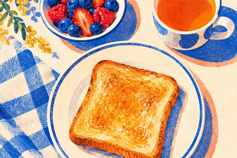
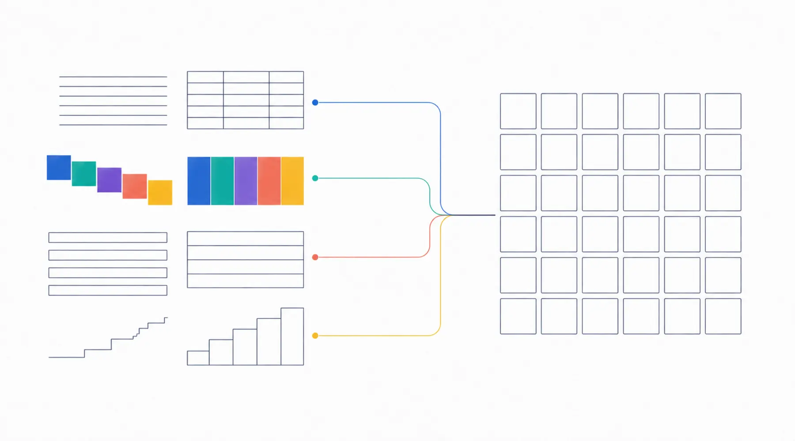

はじめての方へ
SNSがある時代にも、
Webサイトが必要な理由
WebサイトとSNSは、どちらか一方を選ぶものではありません。見つけてもらう入口と、内容を確認する場所を分けると、事業の情報が伝わりやすくなります。

入口 1SNS見つけてもらう- 入口 2地図・店舗情報場所を確かめる
- 確かめる場所Webサイト内容・料金・考え方を読んで、
相談するかを決める
SNS、地図、Webサイトの違い
それぞれ得意なことが違います。置き換えではなく、役割分担です。
SNS
得意なこと
日々の活動、雰囲気、短いお知らせを届ける。届き方はサービスの仕組みや運用状況で変わります。
向かないこと
投稿が流れるため、料金や対応範囲を「いつでも同じ順番で」読ませることには向きません。
地図・店舗情報サービス
得意なこと
場所、営業時間、経路、口コミの確認。近くで探している人に見つけてもらいやすい入口です。
向かないこと
掲載できる項目が決まっているため、事業ごとの考え方や進め方までは説明できません。
Webサイト
得意なこと
サービス全体、料金、考え方、よくある質問、問い合わせ方法を、読み手が比較・判断しやすい順番へ整理できます。
向かないこと
公開しただけでは見つけてもらえません。SNSや名刺から案内する流れが必要です。
Webサイトが助ける5つの場面
「アクセスを増やす」より前に、この5つが起きています。
紹介された人が事業内容を確認する
人づてに名前を聞いた人が、依頼してよいかを自分で確かめます。
問い合わせ前に料金や対応範囲を確認する
聞きにくいことを、聞かずに確認できる場所になります。
SNSで興味を持った人が詳しい説明を読む
投稿では伝えきれない前提や条件を補います。
営業時間外でも質問への答えを見つける
よくある質問が、返信を待たずに済む窓口になります。
検索からサービスを探している人へ届く
事業名を知らない人にも、内容から見つけてもらえる可能性が生まれます。

1ページから始める意味
最初から多くのページを用意する必要はありません。事業内容、対象者、主なサービス、料金の考え方、問い合わせ方法を1ページにまとめるだけでも、Web上の正式な窓口になります。
大切なのは、必要な情報が増えたときにページを追加できる構成にしておくことです。1ページで始めて、後から事例やよくある質問を足していく進め方が取れます。
クルーアセントでは、1ページの制作を80,000円（買い切り）からご用意しています。
Webサイトだけでは解決しないこと
先にお伝えしておきたいことです。
Webサイトは、事業そのものの価値や、日々の発信、紹介、接客に代わるものではありません。公開しただけで問い合わせや検索順位が自動的に上がるものでもありません。
公開後も、情報を更新し、SNSや名刺から案内し、届いた問い合わせの内容を見ながら少しずつ整えていくことで役割を果たします。クルーアセントは成果を保証するのではなく、その土台を分かりやすく作ります。
公開前に決める7項目
制作会社へ相談する前に考えておくと、話が早く進みます。無料診断は、この7項目を整理するために作りました。
- 誰に見てほしいか
- 何を依頼してほしいか
- 相手が何を不安に感じやすいか
- 最初に見せる情報は何か
- 料金をどこまで掲載するか
- どの方法で問い合わせを受けるか
- 公開後に誰が更新・管理するか